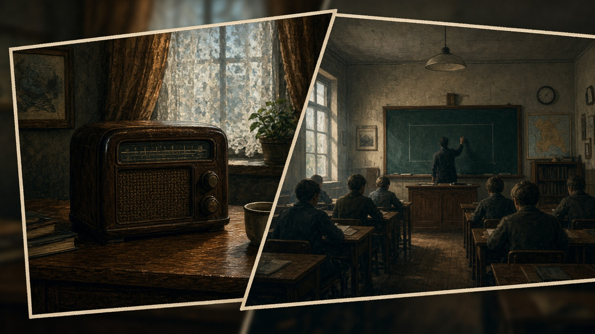

1 · Storia
Dialoghi a vignetta con Lena e la Guida. Scegli le risposte e avanzi capitolo dopo capitolo.
Storia · Visual novel didattica
Una storia a fumetto per capire il Nazismo (1933–1945): crisi di Weimar, propaganda, dittatura, Shoah e memoria. Le scelte sbagliate non ti «puniscono»: ti spiegano.

Dialoghi a vignetta con Lena e la Guida. Scegli le risposte e avanzi capitolo dopo capitolo.
Schede rapide su Weimar, ascesa, ideologia, campi, memoria — per consolidare.
Sei domande per verificare se i concetti sono chiari, con spiegazione dopo ogni risposta.
Questo materiale è educativo. Non glorifica il regime nazista: serve a riconoscere odio legalizzato, propaganda e silenzi pericolosi, e a difendere la democrazia.